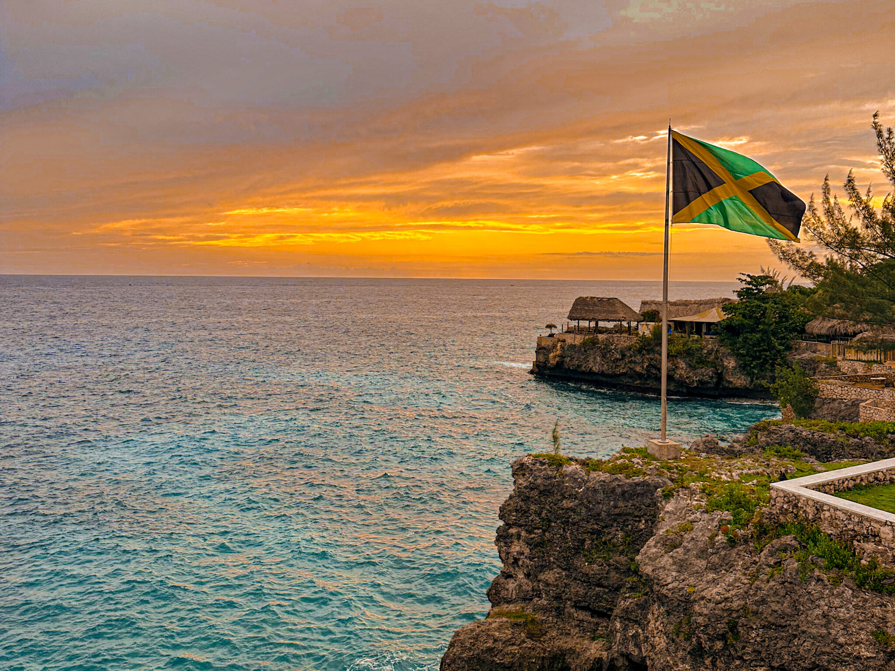
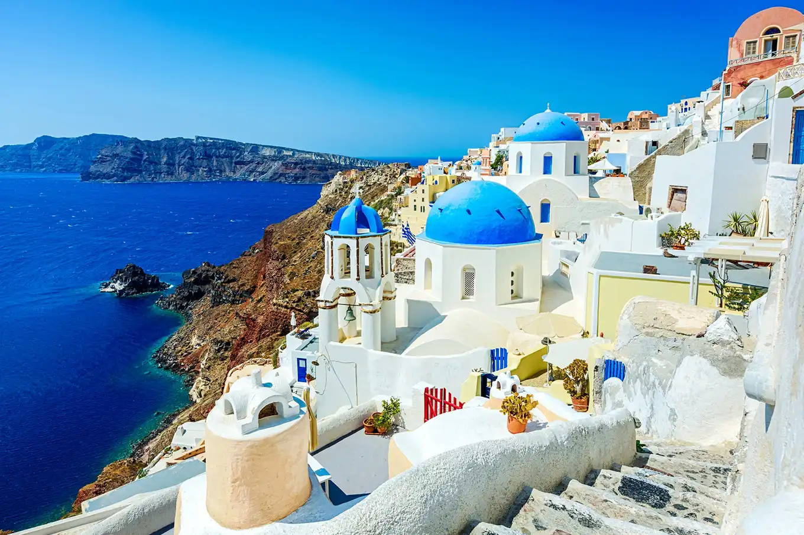
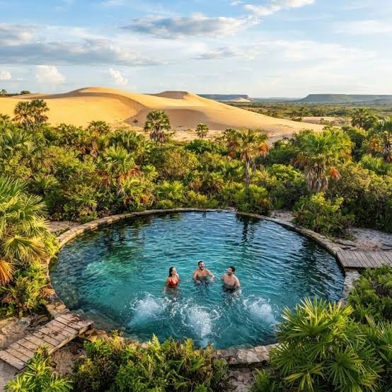

Kingston - Jamaica

Conheça as praias, paisagens e pontos turísticos de um país com uma cultura fascinante, desde a música até a culinária.

Conheça as praias, paisagens e pontos turísticos de um país com uma cultura fascinante, desde a música até a culinária.

Localizada no arquipélago das Cíclades, esta ilha vulcânica atrai viajantes do mundo inteiro em busca de paisagens românticas e pores do sol inesquecíveis.

O Jalapão, no estado do Tocantins, é o destino perfeito para quem ama ecoturismo e aventura. A região combina rios cristalinos, dunas alaranjadas e grandes paisagens naturais.